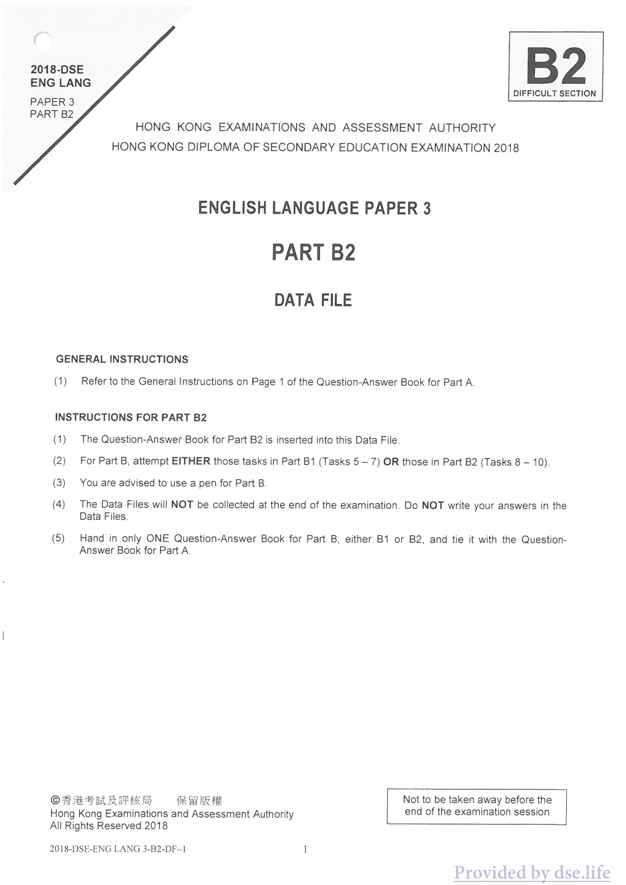

原生文字重建
2018-DSE
ENG LANG
PAPER 3
PART B2
ENG LANG
PAPER 3
PART B2
B2DIFFICULT SECTION
ENGLISH LANGUAGE PAPER 3
PART B2
DATA FILE
GENERAL INSTRUCTIONS
Refer to the General Instructions on Page 1 of the Question-Answer Book for Part A.
請參閱甲部問答冊第 1 頁的一般指示。
INSTRUCTIONS FOR PART B2
The Question-Answer Book for Part B2 is inserted into this Data File.
乙部二問答冊夾於本資料檔內。
For Part B, attempt EITHER those tasks in Part B1 (Tasks 5 – 7) OR those in Part B2 (Tasks 8 – 10).
乙部須選答乙部一（任務 5 至 7）或乙部二（任務 8 至 10），兩者選其一。
You are advised to use a pen for Part B.
建議乙部使用原子筆作答。
The Data Files will NOT be collected at the end of the examination. Do NOT write your answers in the Data Files.
考試結束時資料檔不會收回。請勿在資料檔內書寫答案。
Hand in only ONE Question-Answer Book for Part B, either B1 or B2, and tie it with the Question-Answer Book for Part A.
乙部只須交一份問答冊（乙部一或乙部二），並與甲部問答冊綁在一起。
© Hong Kong Examinations and Assessment Authority
All Rights Reserved 2018Not to be taken away before the end of the examination session
All Rights Reserved 2018Not to be taken away before the end of the examination session
核對原卷影像

Comments (4)
I agree with Anita. There are huge drawbacks. My friend Laz tried Gamezstart for his game and got almost nothing. A few of his friends and family gave some money but that was it. He didn’t get anywhere near his target and had to abandon the project. All that time and effort for nothing!
我同意 Anita。弊處很大。朋友 Laz 用 Gamezstart 籌款，除了少數親友支持外幾乎一無所獲，離目標很遠，最後只好放棄項目，白費時間心力。
I used Gamezstart and actually raised a load of money. Much more money and a lot more investors than I’d expected. But, you know what? I still ended up spending most of the money on shipping the games to investors.
我用 Gamezstart 籌得比預期更多的錢，也有更多投資者；但最後大部分資金都花在把遊戲寄給投資者。
What happened with the shipping costs? Is international shipping that expensive?
運費出了甚麼問題？國際郵寄真的那麼貴嗎？
@ Bling 47. Well, yeah, especially for these games. They’re actually quite heavy.
回覆 Bling 47：是的，尤其這些遊戲本身相當重。